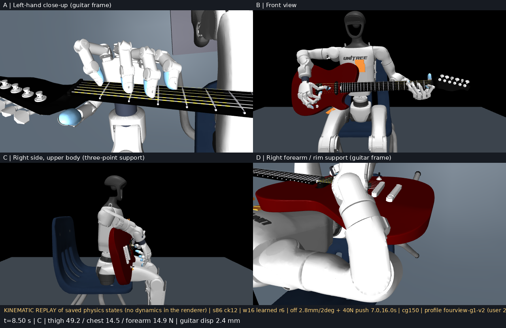
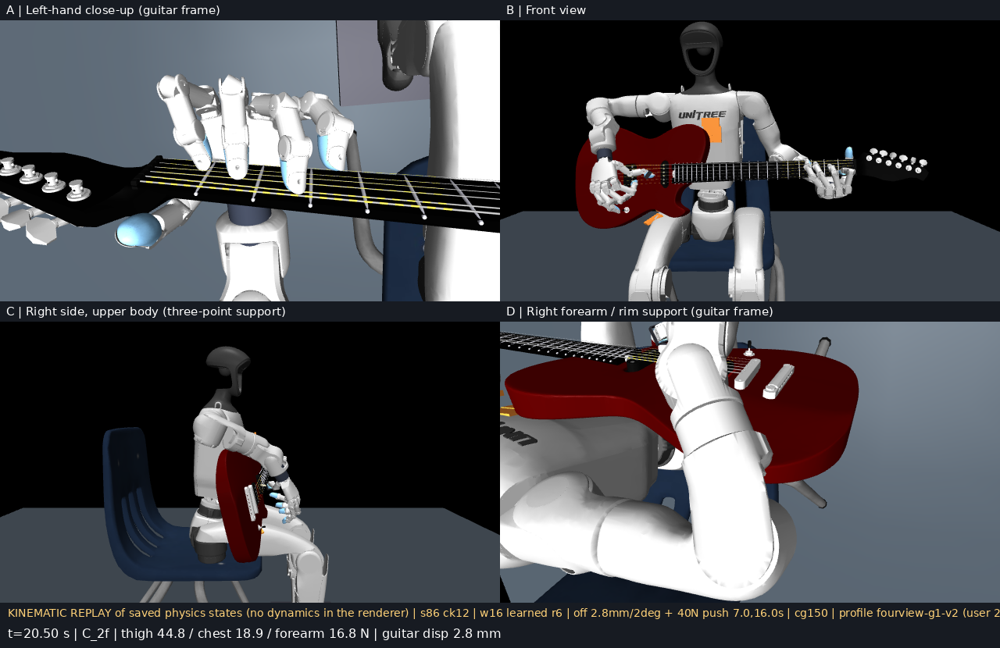

Dexterous Guitar: both hands play House of the Rising Sun on a free guitar
A Unitree G1 with two Wuji Hand 2 plays the full 21.3 s arpeggio in physics simulation (MuJoCo Warp, PPO). The guitar is free: it rests on the thigh, chest and right forearm. Left hand frets, right hand picks, every force comes from the solver.
Full piece · 21.3 s · both handsGuitar free, not welded10-world perturbed acceptance5.4 / 8 chord windows frettedC chord index finger still misses
All numbers: mean policy, 10 worlds, guitar pose offset ±5 mm / ±2° and pushed twice (40 N).
The piece
MILESTONE · 10-30 · checkpoint s86 ck12
Full piece on a perturbed world (world 16): guitar offset at start, pushed at 7 s and 16 s
Real time. Left-hand close-up · front · right side · right forearm. 6 of 8 chord windows fretted; both C chords miss on the index finger.
21.3 s
Am · E7 · Am · C · E7 · Am · C · C
5.4 ± 0.7 / 8
chord windows fretted · 10 worlds
4.2 → 5.4
vs previous best (s85)
11.7 mm
max guitar motion
73 %
picks hit the right string
WHY THE FREE GUITAR IS HARD · 10-27
Let go with the left hand: before, the guitar pivots on the thigh and falls off; after fixing its mass, the neck just sags
Before (half speed): 3 kg lumped in the body, weightless neck, centre of mass on the bridge side of the thigh. The left hand opens at 0.3 s, the neck swings up around the thigh and the guitar is gone within a second. The left hand had been pulling the neck inward with 5.5 N the whole time just to keep it there.After: Stratocaster mass distribution (3.5 kg, neck 0.9 kg, inertia from geometry; this clip also has a 5° hip variant that was later dropped). Same release: the neck sags slowly, 9 mm after 2 s, and 2–3 N at the hand holds it, like a player's. Both hands also moved to real-robot sysid gains.
The four metrics
Agreed on 10-23. Where each one stands on the milestone checkpoint.
1 · TRACKING
Follows the reference; the reference follows the human
Policy vs reference
Left
Right
Wrist position, mean / p90
7.6 / 11.2 mm
4.1 / 6.4 mm
Wrist rotation, mean / p90
1.9 / 2.6°
1.5 / 2.8°
Arm joints, mean
0.49°
0.40°
Finger joints, mean
1.44°
0.63°
Fingertips / pick tip, mean
6.9 mm
4.6 mm
≤1 cm
reference vs guitar geometry
mocap
both hands retargeted frame by frame
Residuals are at noise level; both hands are retargeted from human mocap, so the policy looks like the reference and the reference looks like the player. The left-wrist 8 mm is structural (guitar drift + arm compliance): a 4× tracking weight did not move it.
2 · PRESS WHEN IT SHOULD
8 chord windows: string ≥2 N, fret wire ≥1 N, neighbours <1 N, ≥50 ms
Window
Chord
Worlds pass
Longest hold
Force p99
hold
Am
8 / 10
964 ms
9.7 N
press2
E7
10 / 10
414 ms
8.6 N
press4
Am
10 / 10
152 ms
6.4 N
press6
C
0 / 10
0 ms
4.6 N
press8
E7
10 / 10
968 ms
7.5 N
press10
Am
6 / 10
109 ms
9.7 N
press12
C
2 / 10
187 ms
10.6 N
press14
C (2 fingers)
8 / 10
227 ms
5.1 N
Am and E7 solid. Both C chords miss on the index finger by ≈10 mm: 6 mm guitar drift + 4 mm arm compliance + 1 mm hand. Forces inside the human band.
3 · NO CONTACT WHEN IT SHOULD NOT
Chord changes: release, travel, land. Staying fingers may keep pressing.
7.5 N
scrape peak during moves (median of 3)
4.9 N·s
scrape impulse, whole piece
1.9 N·s
release impulse
3.1 N·s
landing impulse (was 2.7)
28 %
moves with scrape <1 N
Move window
1
3
5
7
9
11
13
Scrape peak, N
4.9
3.2
2.5
9.6
3.2
0.6
0.0
Late moves are clean; Am → C and C → E7 still drag fingers across strings. The furthest of the four from done.
4 · GUITAR STAYS STILL (and the hands follow it)
Free guitar on thigh + chest + right forearm; pose offset and pushed in every world
11.7 ± 0.8 mm
max displacement
9.4 mm
during press windows
1.6°
max rotation
47 · 20 · 15 N
thigh · chest · forearm, holds
10 N
left hand on the neck, holds
Never falls or flips under the pushes; 12 mm is "a little wobbly" to a player and is the main reason the C chord misses. Guitar pose is observed, so this is a learning target.
Episode and what counts as a pass
House of the Rising Sun 21.3 s · 60 picks
Am0.0
→
E74.1
→
Am6.5
→
C8.5
→
E711.5
→
Am16.1
→
C18.1
→
C₂20.5
Tab at half speed. Green = ≥8 of 10 worlds, amber = 6, red = ≤2.
Press window passestarget string ≥2 N from the hand · fret wire ≥1 N · neighbours <1 N · held ≥50 ms · presser force p99 ≤10 N
Move windowreported as release / scrape / landing impulse; scrape peak <1 N is ignored (the player's rule); staying fingers exempt
Right handeach of 60 picks: did the pick cross the written string (hit), only that string (clean), within the beat (synced)
Guitarmax displacement and rotation over the piece; support forces at thigh, chest, forearm, left hand
What changed this week
RIGHT HAND · 10-26/27 · mocap retarget
Right hand: human mocap (left) vs our reference (right), same cameras
Real time, same guitar-frame cameras. Left: the human mocap skeleton (wrist → knuckle → middle → nail per finger, thumb nail red). Right: our reference on the robot with the same markers drawn. Top row from the treble side, bottom row along the strings. The current reference (v10r) adds a pinch fix on top of this.
PRINCIPLE · 10-30 · the last centimetre is the policy's job
Audit of the whole chain found the training signal, not the reference, was the bottleneck
4.5 %
share of the advantage from pressing (15 reward heads, per-head normalised)
2 cm
pressing shaping scale: no gradient inside 1 cm
0.1 rad · 5 mm
new finger / fingertip tracking dead-bands
3.5 mm
new pressing shaping scale, on guitar geometry
Verified on a 1-hour focused window with a control run first, then on the full piece: 4.2 → 5.4 windows, all 10 worlds at or above the control mean.
OPEN · the C chord index finger
Why press6 is 0 / 10: index lands 10 mm short of S5F1 after the Am → C change
7.5–10.5 s at half speed, index finger on S5. Ring stretches to S2F3, guitar drifts 6 mm, arm gives 4 mm, index lands on the wrong side of the string.
Finger- and wrist-level changes (tracking weights, dead-bands) all leave this window at 0.19–0.21, with controls. The fix has to come from the arm following the guitar; arm-level single variables are running now.
How the policy is trained now
State
joint pos / vel / last command, both arms + hands
guitar pose in the robot frame
fingertip pads and pick tip in the guitar frame
Task
timed chord cells and picks from the tab
→
Policy
MLP · Gaussian · PPO
adaptive KL 0.015 / 0.03
warm start from last best
→
Action · 54
2 × (arm 7 + hand 20)
PD targets · 20 Hz
→
Physics
MuJoCo Warp · 1024 worlds
free guitar, Strat mass, sysid hands
guitar pose offset + pushes in training
→
Reward
track mocap reference with 1 cm dead-band
per-string press / no-press heads
pick heads · guitar stability · force band
12.5 min
per PPO update (1.5 s windows, 1024 worlds)
50 %
episodes continue from the policy's own states
18 min
per checkpoint evaluation (was 90)
10 worlds
perturbed acceptance on every checkpoint
Pure PPO, no behaviour cloning (ablated). The 18-minute evaluation ranks checkpoints the same way as the 90-minute one.
How the score moved this week
Date
Checkpoint
Chord windows fretted / 8
Conditions
10-27
A+lat ck04
7.2
old guitar mass, 5 worlds, guitar barely perturbed; 0 / 8 once the guitar was truly offset 3–4 mm
10-29
s80c ck12
5.1 ± 0.6
Strat mass, sysid gains, mocap right hand, 10 perturbed worlds: the honest baseline
10-30 00:30
s85 ck12
4.2 ± 0.4
reward-patch line: rejected
10-30 10:36
s86 ck12
5.4 ± 0.7
1 cm dead-bands + guitar-geometry shaping, same 10 perturbed worlds
The 10-27 number was measured before the guitar was perturbed or its mass fixed; the number went down and came back up under harder conditions.
Keyframes · world 16
4.25 s · E7 (press2) · fretted

8.5 s · C (press6) · index misses S5F116.25 s · Am (press10) · just after the second 40 N push

20.5 s · C with two fingers (press14) · fretted
Ruled out this week
01
Fixing the reference at mm levelThree days of retarget tuning did not move the acceptance number. 1 cm is enough; the rest is learned.
02
Friction pads, strap, pre-load, wedgeNone of them was the stabilisation bottleneck; the mass model was.
03
More tracking weight on the wrist×4 weight: wrist error 8.22 vs 8.24 mm, identical. The residual is structural.
04
BC pre-training, KL tuning, auxiliary headsAblated with controls; no effect on left-hand pressing.
Next
NOW
Arm-level single variables
Left-arm tracking weight on the full piece (result today), finger tracking weight, arm dead-band; then combine the winners into the next full-piece recipe
NEXT
Advantage composition
Pressing is 4.5 % of the advantage today. Re-weight the heads or move to per-string independent advantages (Pei Xu); clean up idle fingers pressing wrong strings in the reference
THEN
Sharpa W02 hand
URDF requested. What transfers is the method: the four metrics as reward targets, staying-finger pressing, 1 cm reference rule, 10-world perturbed acceptance on every checkpoint
Numbers from pieceaccept_cli_movesplit.json of eval_perturb10o_checkpoint12_fast_x10 (s86 ck12) and the s85 ck12 control; videos are kinematic replays of the stored evaluation states on the D1b render model. Living record in notes/GUITAR_DEX_PROJECT.md, daily notes notes/daily/D01–D04. Dataset: Pei Xu et al., SIGGRAPH Asia 2024 (CC BY-NC-ND, internal use).